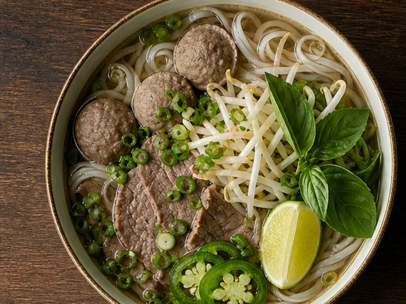
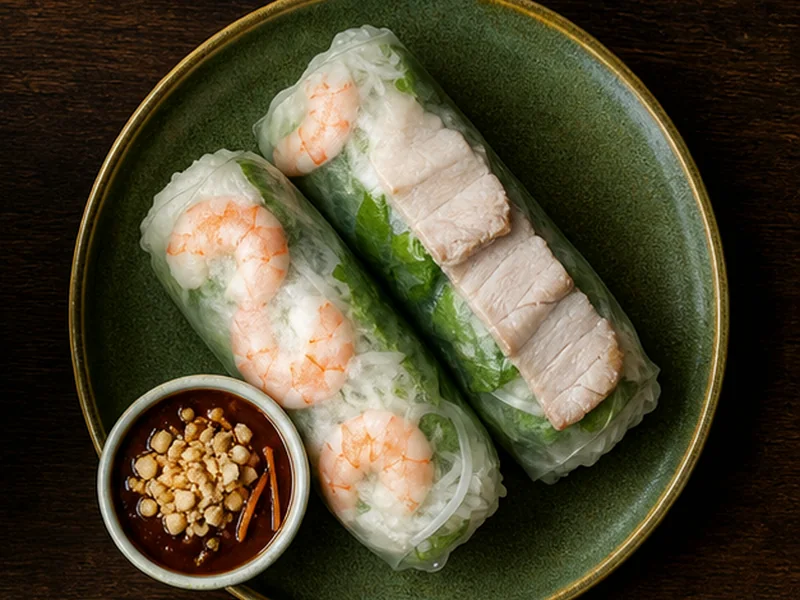
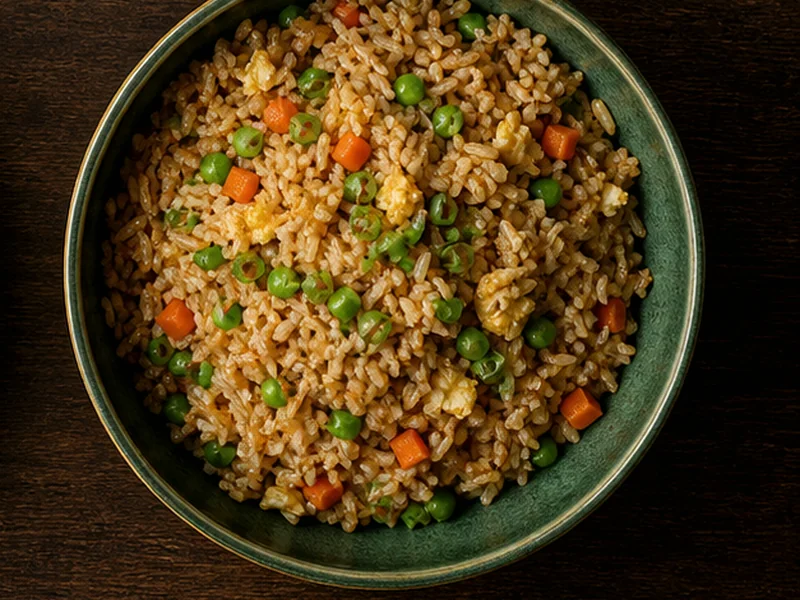

Vietnamese Pho
Rice noodles in beef broth with thin-cut beef, meatballs, onions, herbs, bean sprouts, jalapeño and lime.
$18
Godfrey, Illinois · Open Tuesday–Saturday
A deep bowl of pho, fresh spring rolls and the wok classics Godfrey comes back for. Read the current menu, then call for pickup.

One neighbourhood kitchen
China Wok brings Chinese favourites and Vietnamese specialties together on one broad menu — from lo mein and fried rice to pho, fresh spring rolls and Mi Xao Don.
You’ll find the restaurant in Piasa Center at 2702 Godfrey Road. The phone number and current June 2026 menu stay easy to reach on every page.
See hours and directionsStart with a craving
These dishes and prices come from China Wok’s official June 2026 menu.
Rice noodles in beef broth with thin-cut beef, meatballs, onions, herbs, bean sprouts, jalapeño and lime.
$18Shrimp, pork, herbs and rice noodles in rice paper with hoisin-peanut sauce.
$7A familiar wok classic, available in small and large portions.
$13.50 / $18Crispy stir-fried egg noodles with vegetables and your choice of protein.
From $18Menu and place
The official storefront plus representative visuals grounded in the current menu.
2702 Godfrey RoadPho + spring rolls
Vietnamese Pho
Fresh Spring Rolls General Tso’s Chicken
General Tso’s Chicken
Fried RiceFood images are representative menu visuals; preparation and presentation may vary. Storefront image is official.
Open five days a week
Sunday and Monday are closed. If you are unsure about a closure or holiday, check the official site or call before travelling.
Find us in Piasa Center
Call ahead for pickup, or use the map to find China Wok on Godfrey Road.